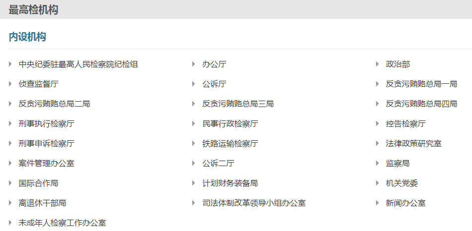

最高人民检察院是中华人民共和国最高国家检察机关，成立于1954年，办公大楼现位于北京市东城区北河沿大街147号。主要任务是领导地方各级人民检察院和专门人民检察院依法履行法律监督职能，保证国家法律的统一和正确实施。
最高人民检察院与国务院同属中央国家机关序列，对于国务院所属各部门、地方各级国家机关、国家机关工作人员和公民是否遵守法律，行使国家检察权。人民检察院依照法律规定代表国家独立行使检察权，不受任何行政机关、社会团体和个人的干涉。
2018年3月全国“两会”期间，张军同志当选为最高人民检察院检察长。
最高人民检察院的机构组成如下图所示。
